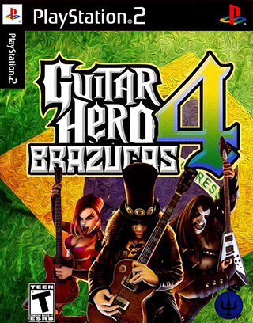

Informações Importantes

Este jogo é uma modificação. Não possuímos qualquer ligação com os detentores dos direitos autorais da obra original. Guitar Hero Brazucas IV é uma homenagem a trilogia Guitar Hero: Brazucas, criada por Thiago "Sub Zero" e Dennys Wilder "Dark Shadow".
Termos de uso
- Não está autorizada qualquer tipo de modificação utilizando a base de Guitar Hero Brazucas IV.
- A abertura do arquivo .ISO não está autorizada
- Comercialização
- Esta obra foi produzida e será distribuída de forma gratuita enquanto digital. Não está autorizada a venda do arquivo .ISO ou do pacote para PC em qualquer hipótese. Caso observado algum estabelecimento comercial utilizando-se de nossos arquivos, entre em contato conosco clicando aqui.
- Autorizamos a comercialização deste jogo em meio físico, contanto que sigam-se as regras de utilizar-se das artes originais e em hipótese alguma alterá-las. Os arquivos e as instruções para a fabricação de mídia física deste jogo pode ser encontrados aqui.